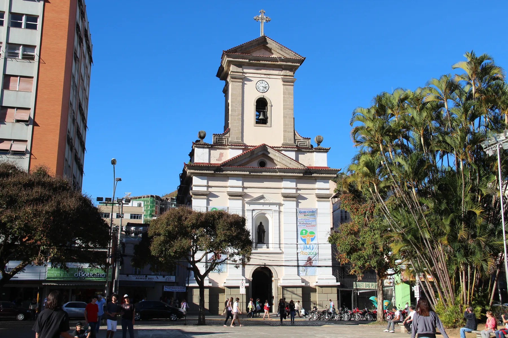
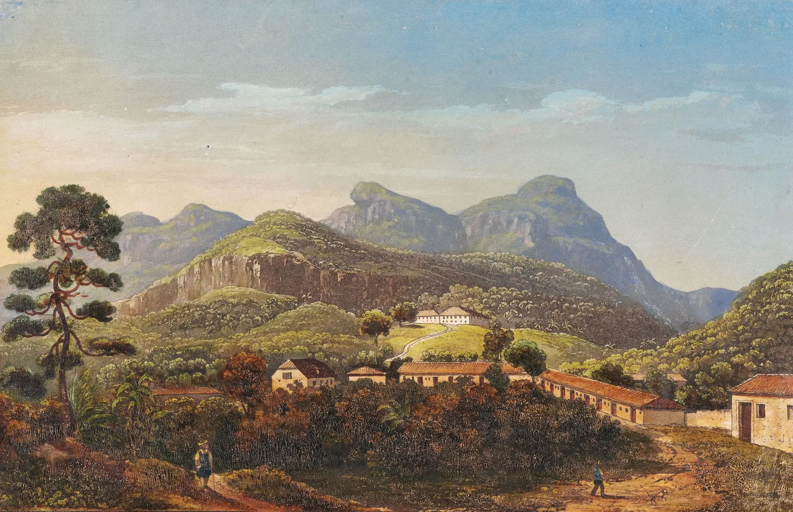
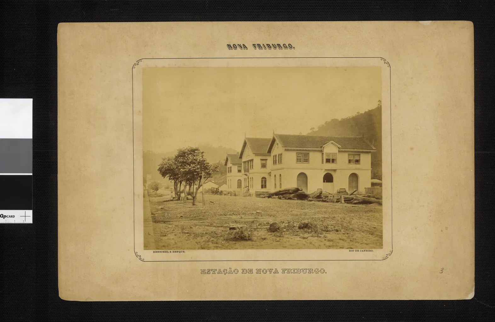
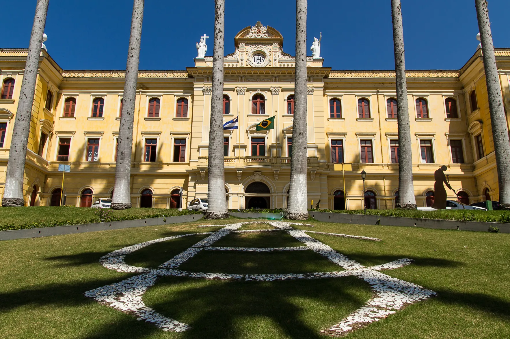

Catedral de São João Batista
Dedicada a São João Batista, que dá nome à vila desde a fundação: Vila de São João Batista de Nova Friburgo. Fica no coração do Centro.
Foto: Marinelson Almeida, CC BY 2.0
A história de Nova Friburgo
Suíços, alemães e muitos outros cruzaram o oceano para recomeçar na serra. Daqui saiu a primeira comunidade luterana do Brasil.

1818
Em 16 de maio de 1818, Dom João VI assinou o decreto que autorizava a instalação de famílias suíças do cantão de Fribourg na Fazenda do Morro Queimado. A cidade existiu no papel antes de existir no chão.
A serra não estava vazia: pesquisas recentes mostram que indígenas, negros escravizados e roceiros pobres já viviam na região do Morro Queimado antes de 1819.
Fontes: Prefeitura de Nova Friburgo; Fundação D. João VI (Jornada 1819); Revista GeoUERJ; Revista Cordis (PUC-SP, 2026).

3 de maio de 1824
É a comunidade mais antiga da Igreja Evangélica de Confissão Luterana no Brasil. O primeiro ofício religioso foi triste: o sepultamento do filho do pastor Sauerbronn, no mesmo 3 de maio.
Fontes: Prefeitura de Nova Friburgo (2022); IECLB, Carta à Nação Brasileira (2024).
1862
Antonio Clemente Pinto, o Barão de Nova Friburgo, mandou construir uma casa de campo em estilo chalé, projeto do arquiteto alemão Gustave Waehneldt. Em volta, o paisagista francês Auguste Glaziou, que também desenhou a Quinta da Boa Vista, criou lagos, alamedas e jardins. Nascia a Chácara do Chalet, palco de festas, bailes e concertos da aristocracia.
São mais de 180 mil metros quadrados de jardins abertos a visitantes todos os dias, das 8h às 17h. Av. Conselheiro Julius Arp, 140 · (22) 2522-9552 · nfcc.com.br
Fontes: Nova Friburgo Country Clube; Amigos do Chalet; A Voz da Serra; iPatrimônio.

1870
A Estrada de Ferro Cantagalo, primeira ferrovia de montanha do Brasil, ligou Niterói a Nova Friburgo e começou a operar em 1873. Com o trem vieram comércio, hotéis e escolas.


A estação do Rio Grande é inaugurada e impulsiona o povoado que viria a se chamar Riograndina.
Fonte: História de Nova Friburgo, Janaína Botelho.
10
Depois dos suíços e dos alemães, Nova Friburgo continuou recebendo gente de longe. A cidade se reconhece como terra formada por dez povos, e essa mistura está nas festas, nos sobrenomes e na mesa.
As festas acontecem em datas marcadas. Antes de ir, confira a agenda da Secretaria de Turismo.
Fontes: Prefeitura de Nova Friburgo; festival Sabores das Nações, Mês das Colônias (2013).

Hoje

Dedicada a São João Batista, que dá nome à vila desde a fundação: Vila de São João Batista de Nova Friburgo. Fica no coração do Centro.
Foto: Marinelson Almeida, CC BY 2.0
1824
A primeira comunidade luterana formalmente criada no Brasil, fundada pelos imigrantes alemães.

Escola jesuíta que nasceu no impulso da ferrovia e virou símbolo da cidade.
Foto: João Luccas Oliveira
Associação católica com sede no Parque São Clemente. A capela de Nossa Senhora de Fátima, apelidada de "castelo", é um dos marcos recentes da paisagem.
Igrejas, templos e centros religiosos de várias tradições, que contam como Nova Friburgo foi recebendo gente de muitos lugares.
Para visitar
Em 1818, Dom João VI já previa um museu para a futura vila, e as pedras fundamentais foram lançadas em 1820. O projeto só saiu do papel dois séculos depois.
Museu Nova Friburgo: de quinta a domingo, das 12h às 18h. Entrada gratuita.
Fonte: Fundação D. João VI de Nova Friburgo.

O Walking Tour passa pela Praça Getúlio Vargas, pela Catedral, pela Igreja Luterana e pelo Colégio Anchieta. Em Fribourg, na Suíça, uma praça leva o nome de Nova Friburgo e guarda a memória de quem partiu.
Abrir o Walking Tour